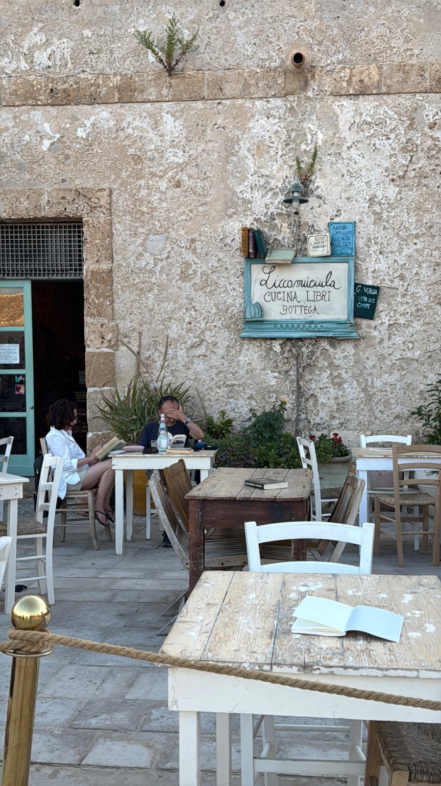

lectura
Creo que a todos nos gusta leer. Solo hace falta encontrar el libro correcto.
No el que te dicen que leas, el clásico o el que se puso de moda. Tiene que llamar tu atención, por el tema o por el género. Y aun así, puede no gustarte. Entonces, la búsqueda sigue.
No hay reglas: alcanza con la curiosidad de intentarlo.

disfrutar de la lecturaal propio ritmo
libros
Acá te dejo algunos de los míos, ordenados según lo que puedas estar atravesando.
Historias en las que meterte y perder la noción del tiempo.
Carlos Ruiz Zafón
Libros, secretos y una Barcelona de posguerra. Es una historia que te atrapa: no podés parar de leerla y, a la vez, no querés que se termine.
Taylor Jenkins Reid
El ascenso y la caída de una banda de rock de los setenta, contado como si fueran entrevistas. La forma en que está escrito hace que te olvides de que es ficción. Y como en la vida real, muestra cómo a veces, teniendo todo lo que se deseaba, no se sabe sostener.
Libros que te dan otra perspectiva sobre tus propias vivencias.
Pablo André Hodel
Cuestiona lo que repetimos sin pensar y la costumbre de mirar las cosas desde un solo lugar. Te ayuda a ver los mandatos que aprendiste para encajar y a desarmarlos haciéndote cargo, sin quedarte en el lugar de víctima.
Julia Cameron
Parte de una idea simple: la creatividad es de todos, sin importar a qué te dediques. Propone herramientas para recuperarla, y la mejor son las páginas matutinas: tres páginas escritas a mano apenas te levantás, sin pensar en lo que ponés. A mí me abrieron una puerta que tenía cerrada: ahí acepté que me gustaba escribir. Todavía las hago.
Libros con los que no siempre vas a coincidir, y justo por eso te hacen pensar qué creés vos.
Eckhart Tolle
Habla de vivir en el presente desde un pedestal. Repite una y otra vez lo difícil que es alcanzar lo que él plantea, como si el resto nunca fuéramos a llegar. Está acá porque a veces un libro te sirve justamente para darte cuenta de lo que no querés.
Brian Weiss
Un psiquiatra cuenta cómo, en sesiones de terapia, una paciente empieza a recordar vidas pasadas. Te puede conmover, generar dudas o las dos cosas, y en cualquier caso te hace preguntarte qué creés.
fragmentos
Frases sueltas, para pasar por el cuerpo.
… a veces la única manera de aprender es vivir.
La biblioteca de la medianoche · Matt Haig
… la vida es más cambiante de lo que pensaba. Quiero decir que una vida puede ser desgraciada durante mucho tiempo y luego ser feliz. No es solo una cosa o la otra; no está anclada a un raíl llamado «personalidad» y tiene que seguir por ahí hasta el final. Pero yo antes creía que sí.
Dónde estás, mundo bello · Sally Rooney
Cambiar es pensar más allá de cómo nos sentimos.
Deja de ser tú · Joe Dispenza
a veces otros escriben,lo que cuesta decir
prácticas posibles
Estas son las que a mí me funcionan. Tomá las que te sirvan, dejá el resto.
Subrayá, doblá la hoja, escribí en el margen. Un libro marcado es un libro con el que conversaste. Cuando lo volvés a abrir, ves por dónde pasaste.
Si no te engancha, dejalo. A veces no es el libro, es el momento. Uno que te encantó hace años hoy puede no decirte nada, y uno que dejaste por la mitad puede atraparte cuando lo retomes. Y si intuís que tiene algo para vos, seguí un poco más: muchas veces hay un capítulo que aburre y después se pone bueno.
Tener más de uno empezado te deja agarrar el que va con tu energía del día. Puede que avances más lento, o que varios queden por la mitad. Leer así también es leer.
El próximo no tiene que ser el que compraste primero. Dejate llevar por lo que tenés ganas de leer hoy. Los que quedan sin leer te van a seguir esperando, para cuando sientas que es su turno.
No hace falta leer 80 libros por año. Cuando la lectura se vuelve una meta, pasa a ser algo más con lo que cumplir. No la volvamos eso.